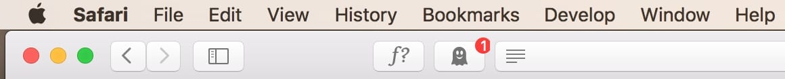
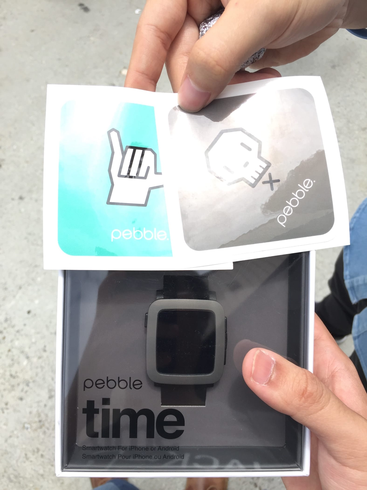

Sunday, 22 May 2016 at 9:58 PM
Weekly Log #8
UserTesting
Electron client
This week, we commenced what we call The Grand Refactor on the codebase of the Trello client.
Menu code
For starters, if you visit the following link, you’ll notice many lines of what Electron calls a menu template. That sets up the menu items and lists you see on all three platforms.

Mac OS X’s menu bar
That menu code was taking up far too many lines on the main Javascript file, which contained other important code like reading/writing settings, setting up new windows, and handling app quitting. The menu code stuck out like a sore thumb, taking up all the space in the middle of the file. In the refactor, we moved the menu code out to a separate file, and introduced a MenuBuilder class to reach in to the template and inject click handlers.
Fetch
Fetch is a new API for making HTTP requests in the browser. It’s the successor to the old clunky XMLHttpRequest API. Compare the following:
// XMLHttpRequest
var req = new XMLHttpRequest();
req.addEventListener("load", function() {
console.log(this.responseText);
});
req.open("GET", "http://www.google.com");
req.send();
// Fetch
fetch('http://www.google.com')
.then(function(response) {
console.log(response.text());
});
Fetch uses Promises, which is a cleaner way to do asynchronous operations in Javascript. We were already using Fetch before the refactor, but it was still a bit clunky. There were two functions we kept using in the fetch chain, one to check
the return status to be 200, and one to return the JSON form of the response. In the refactor, we created a new function called fetchJSON() that was essentially the same as fetch(), but in that it already had
the other two functions in its promises chain.
Hubot
The chat bot got its green light, and it’s now in use! It now posts updates to active, in-use Slack channels. The best thing? James, my supervisor, managed to find a profile image they used on the older bot, which this one replaced. This bot now has a face!
Saturday
We went to Maker Faire, which is a major event in the hardware space.
We went to the expo building, where we found a Pebble smartwatch booth at the entrance. They were selling their Time and Time Round watches on a discount, so I got one.

Yay
Unfortunately for me, Pebble announced their new Kickstarter just a few days later, where they introduced its successor 😒